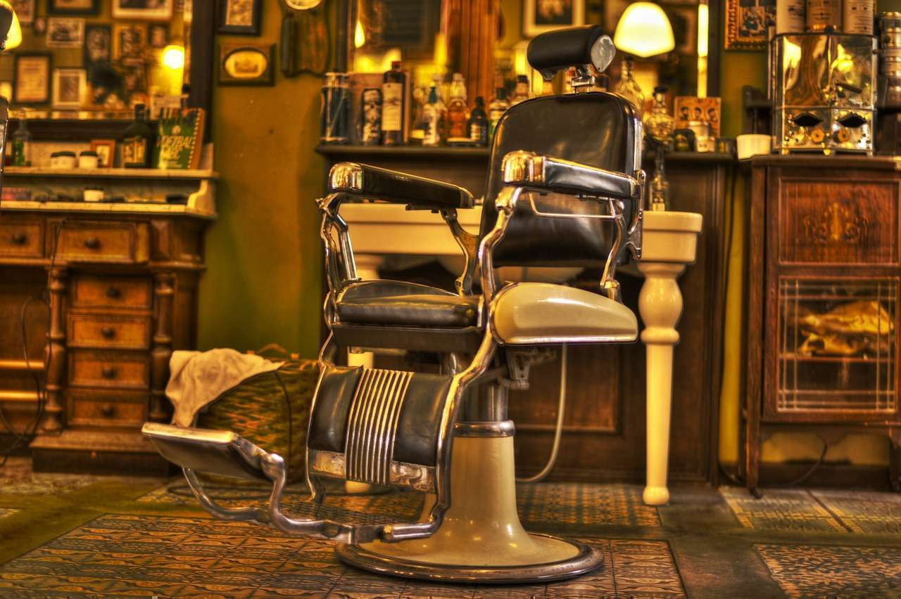

Barbearia do Di: 10 anos de estilo, tradição e inovação
Há uma década, a Barbearia do Di vem oferecendo mais do que cortes de
cabelo e cuidados com a barba – proporcionamos uma verdadeira
experiência de estilo, conforto e bem-estar. Ao longo desses 10 anos,
conquistamos a confiança dos nossos clientes ao unir o melhor da
barbearia tradicional com as tendências mais modernas. Nosso espaço
reflete essa fusão: de um lado, o charme clássico das antigas
barbearias, toalhas quentes e aquele bom papo descontraído; de outro, o
toque inovador da modernidade, com técnicas de corte e acabamento de
última geração, produtos premium e um ambiente contemporâneo.
Aqui, tradição não significa ficar preso ao passado.
Mantemos vivo o espírito dos barbeiros de antigamente, oferecendo um
atendimento personalizado e de alta qualidade, mas sempre antenados nas
novidades do mundo da moda masculina. Seja para um corte clássico,
aquele degradê impecável, ou um cuidado especial com a barba, nossa
equipe está pronta para atender você com maestria e precisão. Com 10
anos de história, continuamos evoluindo para oferecer a melhor
experiência aos nossos clientes.
Venha fazer parte dessa
trajetória e descubra como o clássico e o moderno se encontram na
Barbearia do Di. Porque, cada detalhe é pensado para que você se sinta
renovado e confiante.